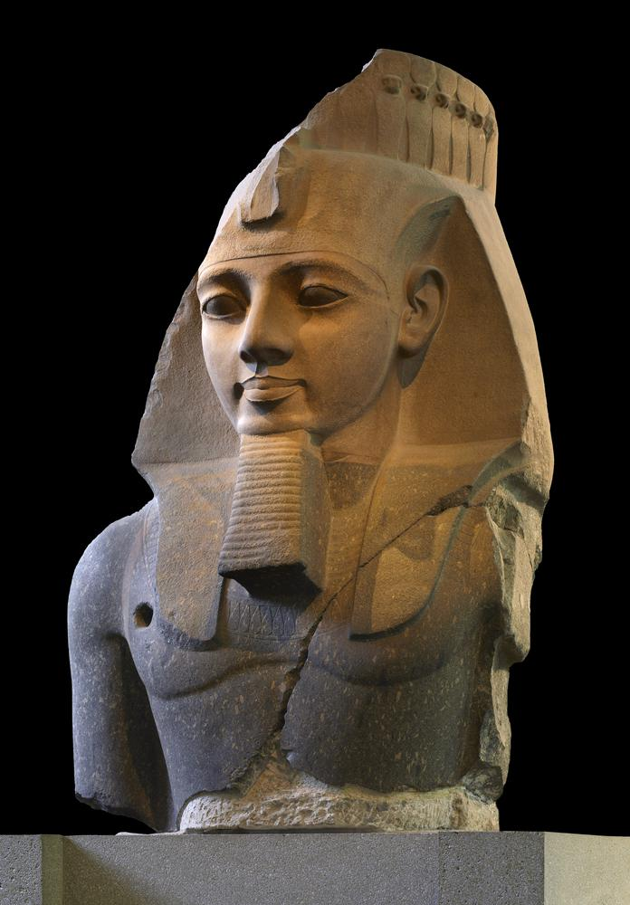
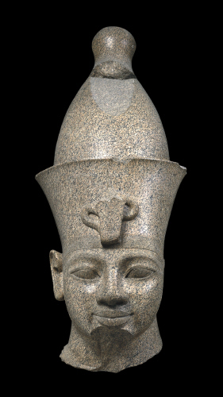
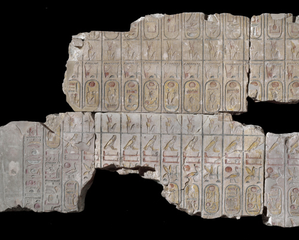

England
What museums should you visit?
British Museum
If you want to go to a museum that has artifacts and tools from all around the world? Then the British Museum is perfect for you. At the British Museum you can find everything from Egyptian caskets and hieroglyphs to Greek statues and architecture. They have more than 60 galleries where you can discover old historical artifacts from all around the world.
Egyptian gallery
At this gallery you can experience antiquities from Egypt. In the 1800's, the British Consul-General Henry Salt received permission from Egypt’s governor Muhammad Ali to collect them, and many of these artifacts have stayed in the British Museum since.
Some of the things you can see at this gallery is a colossal granite image of King Ramesses II, colossal granite head of King Amenhotep III, Limestone of Egyptian Rules, ETC.
Nr1: The granite image of King Ramesses II
The granite image of King Ramesses II is the largest sculpture at the British museum. It’s an image of Ramesses II whose reign lasted almost 67 years. It was carved from one block, quarried at Aswan almost 124 miles further south. Like all Egyptian statues, it was originally painted. Pigments can still be found on this statue.
Nr2: The colossal granite head of King Amenhotep III
The colossal granite head of King Amenhotep III who reigned over Egypt until his death around 1370 BC commissioned numerous statues for himself, especially for his temple in Thebes, which was then Egypts capital
Nr3: The Limestone of Egyptian Rulers
The Limestone of Egyptian Rulers comes from a temple of Ramesses II. It’s a list of the past Egyptian kings who roamed over egypt. It was created to express the living ruler's legitimacy. The kings are represented by their throne names, written in oval ‘cartouches’. Rulers that were deemed unimportant or illegitimate, including queens were omitted from this list. They only used the ruler's throne name.
The British Museum is open from 10:00 to 17:00, and 10:00 - 20:30 on fridays. It's free entry for everyone, so you are welcome to experience the British museum for yourself. If you want to book a tour then you should click this link.